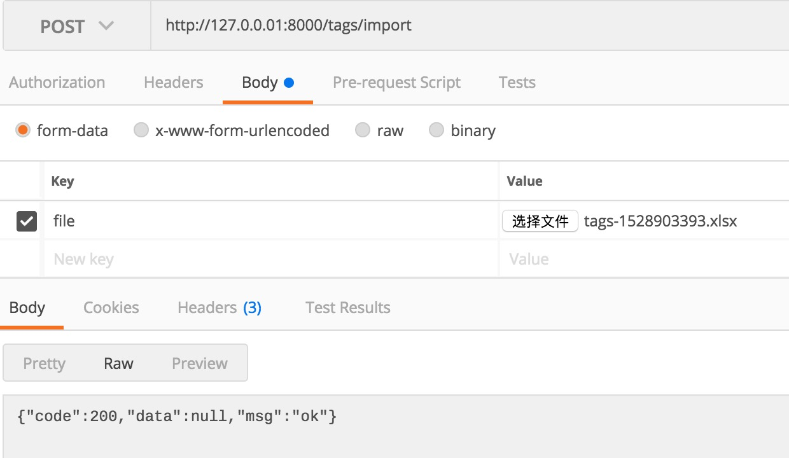

3.14 實作匯出、匯入 Excel
專案地址：https://github.com/EDDYCJY/go-gin-example
知識點
- 匯出功能的實作
本文目標
在本節，我們將實作對標籤資訊的匯出、匯入功能，這是很標配功能了，希望你掌握基礎的使用方式。
另外在本文我們使用了 2 個 Excel 的包，excelize 最初的 XML 格式檔案的一些結構，是透過 tealeg/xlsx 格式檔案結構演化而來的，因此特意在此都展示了，你可以根據自己的場景和喜愛去使用。
設定
首先要指定匯出的 Excel 檔案的儲存路徑，在 app.ini 中增加設定：
[app]
...
ExportSavePath = export/
修改 setting.go 的 App struct：
type App struct {
JwtSecret string
PageSize int
PrefixUrl string
RuntimeRootPath string
ImageSavePath string
ImageMaxSize int
ImageAllowExts []string
ExportSavePath string
LogSavePath string
LogSaveName string
LogFileExt string
TimeFormat string
}
在這裡需增加 ExportSavePath 設定項，另外將先前 ImagePrefixUrl 改為 PrefixUrl 用於支撐兩者的 HOST 取得
（注意修改 image.go 的 GetImageFullUrl 方法）
pkg
新建 pkg/export/excel.go 檔案，如下：
package export
import "github.com/EDDYCJY/go-gin-example/pkg/setting"
func GetExcelFullUrl(name string) string {
return setting.AppSetting.PrefixUrl + "/" + GetExcelPath() + name
}
func GetExcelPath() string {
return setting.AppSetting.ExportSavePath
}
func GetExcelFullPath() string {
return setting.AppSetting.RuntimeRootPath + GetExcelPath()
}
這裡編寫了一些常用的方法，以後取值方式如果有變動，直接改內部程式碼即可，對外不可見
嘗試一下標準庫
f, err := os.Create(export.GetExcelFullPath() + "test.csv")
if err != nil {
panic(err)
}
defer f.Close()
f.WriteString("\xEF\xBB\xBF")
w := csv.NewWriter(f)
data := [][]string{
{"1", "test1", "test1-1"},
{"2", "test2", "test2-1"},
{"3", "test3", "test3-1"},
}
w.WriteAll(data)
在 Go 提供的標準庫 encoding/csv 中，天然的支援 csv 檔案的讀取和處理，在本段程式碼中，做了如下工作：
1、os.Create：
建立了一個 test.csv 檔案
2、f.WriteString("\xEF\xBB\xBF")：
\xEF\xBB\xBF 是 UTF-8 BOM 的 16 進位制格式，在這裡的用處是標識檔案的編碼格式，通常會出現在檔案的開頭，因此第一步就要將其寫入。如果不標識 UTF-8 的編碼格式的話，寫入的漢字會顯示為亂碼
3、csv.NewWriter：
func NewWriter(w io.Writer) *Writer {
return &Writer{
Comma: ',',
w: bufio.NewWriter(w),
}
}
4、w.WriteAll：
func (w *Writer) WriteAll(records [][]string) error {
for _, record := range records {
err := w.Write(record)
if err != nil {
return err
}
}
return w.w.Flush()
}
WriteAll 實際是對 Write 的封裝，需要注意在最後呼叫了 w.w.Flush()，這充分了說明了 WriteAll 的使用場景，你可以想想作者的設計用意
匯出
Service 方法
開啟 service/tag.go，增加 Export 方法，如下：
func (t *Tag) Export() (string, error) {
tags, err := t.GetAll()
if err != nil {
return "", err
}
file := xlsx.NewFile()
sheet, err := file.AddSheet("标签信息")
if err != nil {
return "", err
}
titles := []string{"ID", "名称", "创建人", "创建时间", "修改人", "修改时间"}
row := sheet.AddRow()
var cell *xlsx.Cell
for _, title := range titles {
cell = row.AddCell()
cell.Value = title
}
for _, v := range tags {
values := []string{
strconv.Itoa(v.ID),
v.Name,
v.CreatedBy,
strconv.Itoa(v.CreatedOn),
v.ModifiedBy,
strconv.Itoa(v.ModifiedOn),
}
row = sheet.AddRow()
for _, value := range values {
cell = row.AddCell()
cell.Value = value
}
}
time := strconv.Itoa(int(time.Now().Unix()))
filename := "tags-" + time + ".xlsx"
fullPath := export.GetExcelFullPath() + filename
err = file.Save(fullPath)
if err != nil {
return "", err
}
return filename, nil
}
routers 入口
開啟 routers/api/v1/tag.go，增加如下方法：
func ExportTag(c *gin.Context) {
appG := app.Gin{C: c}
name := c.PostForm("name")
state := -1
if arg := c.PostForm("state"); arg != "" {
state = com.StrTo(arg).MustInt()
}
tagService := tag_service.Tag{
Name: name,
State: state,
}
filename, err := tagService.Export()
if err != nil {
appG.Response(http.StatusOK, e.ERROR_EXPORT_TAG_FAIL, nil)
return
}
appG.Response(http.StatusOK, e.SUCCESS, map[string]string{
"export_url": export.GetExcelFullUrl(filename),
"export_save_url": export.GetExcelPath() + filename,
})
}
路由
在 routers/router.go 檔案中增加路由方法，如下
apiv1 := r.Group("/api/v1")
apiv1.Use(jwt.JWT())
{
...
//导出标签
r.POST("/tags/export", v1.ExportTag)
}
驗證介面
訪問 http://127.0.0.1:8000/tags/export，結果如下：
{
"code": 200,
"data": {
"export_save_url": "export/tags-1528903393.xlsx",
"export_url": "http://127.0.0.1:8000/export/tags-1528903393.xlsx"
},
"msg": "ok"
}
最終透過介面返回了匯出檔案的地址和儲存地址
StaticFS
那你想想，現在直接訪問地址肯定是無法下載檔案的，那麼該如何做呢？
開啟 router.go 檔案，增加程式碼如下：
r.StaticFS("/export", http.Dir(export.GetExcelFullPath()))
若你不理解，強烈建議溫習下前面的章節，舉一反三
驗證下載
再次訪問上面的 export_url ，如：http://127.0.0.1:8000/export/tags-1528903393.xlsx，是不是成功了呢？
匯入
Service 方法
開啟 service/tag.go，增加 Import 方法，如下：
func (t *Tag) Import(r io.Reader) error {
xlsx, err := excelize.OpenReader(r)
if err != nil {
return err
}
rows := xlsx.GetRows("标签信息")
for irow, row := range rows {
if irow > 0 {
var data []string
for _, cell := range row {
data = append(data, cell)
}
models.AddTag(data[1], 1, data[2])
}
}
return nil
}
routers 入口
開啟 routers/api/v1/tag.go，增加如下方法：
func ImportTag(c *gin.Context) {
appG := app.Gin{C: c}
file, _, err := c.Request.FormFile("file")
if err != nil {
logging.Warn(err)
appG.Response(http.StatusOK, e.ERROR, nil)
return
}
tagService := tag_service.Tag{}
err = tagService.Import(file)
if err != nil {
logging.Warn(err)
appG.Response(http.StatusOK, e.ERROR_IMPORT_TAG_FAIL, nil)
return
}
appG.Response(http.StatusOK, e.SUCCESS, nil)
}
路由
在 routers/router.go 檔案中增加路由方法，如下
apiv1 := r.Group("/api/v1")
apiv1.Use(jwt.JWT())
{
...
//导入标签
r.POST("/tags/import", v1.ImportTag)
}
驗證

在這裡我們將先前匯出的 Excel 檔案作為入參，訪問 http://127.0.0.01:8000/tags/import，檢查返回和資料是否正確入庫
總結
在本文中，簡單介紹了 Excel 的匯入、匯出的使用方式，使用了以下 2 個包：
你可以細細閱讀一下它的實作和使用方式，對你的把控更有幫助 🤔
課外
- tag：匯出使用 excelize 的方式去實作（可能你會發現更簡單哦）
- tag：匯入去重功能實作
- artice ：匯入、匯出功能實作
也不失為你很好的練手機會，如果有興趣，可以試試
參考
本系列示例程式碼
關於
修改記錄
- 第一版：2018年02月16日釋出文章
- 第二版：2019年10月02日修改文章
？
如果有任何疑問或錯誤，歡迎在 issues 進行提問或給予修正意見，如果喜歡或對你有所幫助，歡迎 Star，對作者是一種鼓勵和推進。
我的微信公眾號